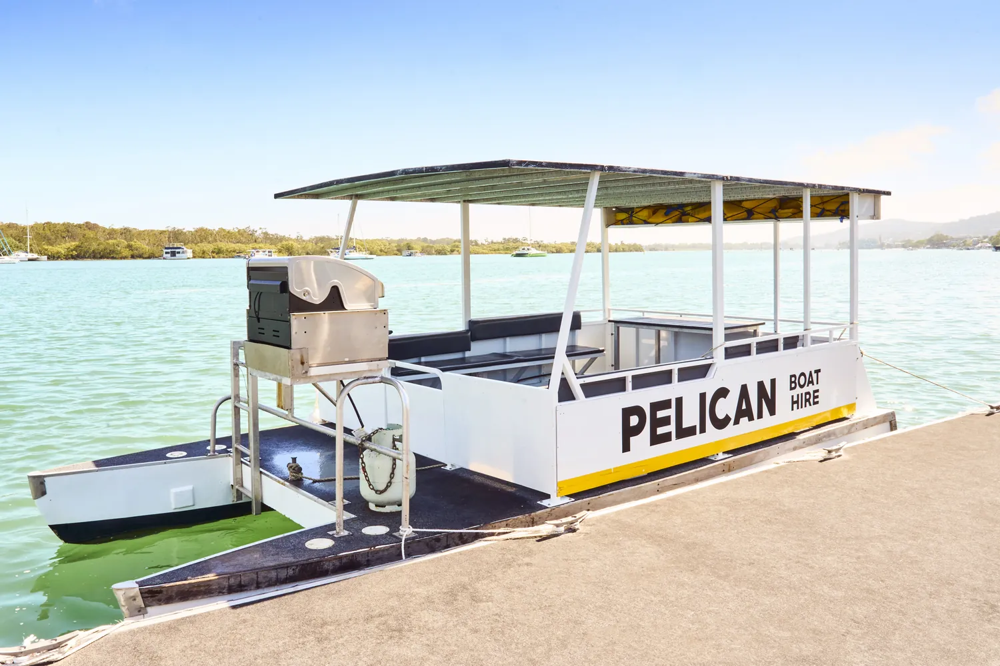
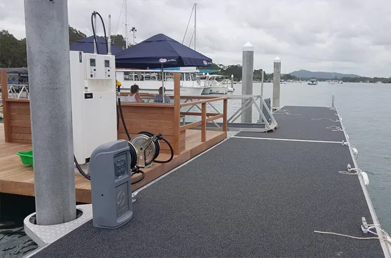
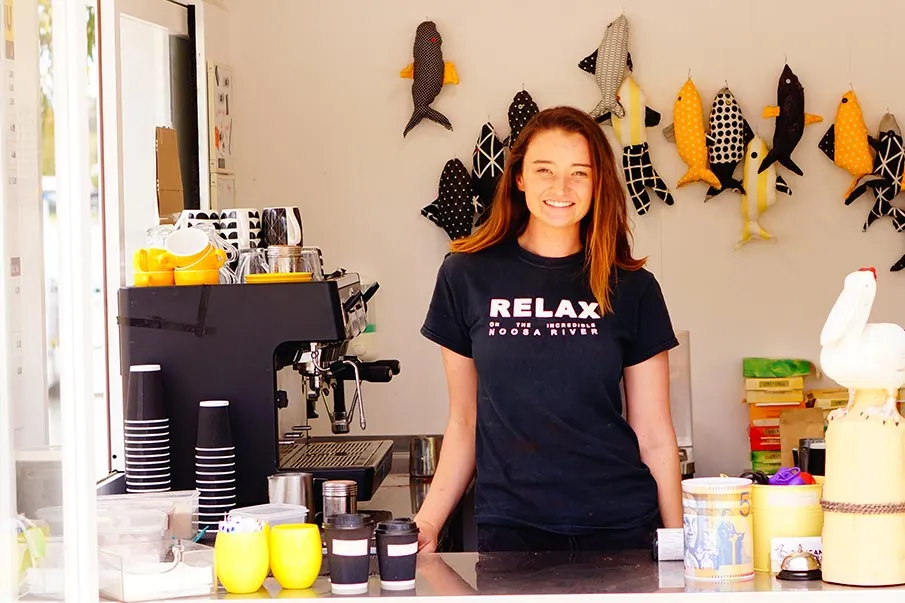

Noosa's Favourite! · Ferry Stop 3, Noosaville
We don't just hire boats. We're the river.
A working slipway, the only Code-compliant fuel dock on the whole Noosa River, the Riverside Kiosk and the shop. The infrastructure the river runs on, all off one jetty since 1957.
The institution
Not a counter. The river's front door.
Most operators on the strip hire a boat and that's it. Pelican is the thing the river runs on, fuel, repairs, coffee and gear, open to everyone whether you're hiring from us or not.

Where it all started.
The slipway is the original Pelican, the working slipway and boat repairs that opened as Noosa Marine Services in 1957. It's still here on the same jetty, hauling out, servicing and antifouling boats for the river community decade after decade.
Whether you need a quick haul-out, a hull clean, or a longer stint on the hardstand, the slipway runs to a published schedule of fees and conditions. Spaces are limited and booked ahead.
Slipway fees & charges: haul-out, daily hardstand and wash-down rates apply, with conditions on insurance and supervised work. Rates change with the season.
Current slipway fees and availability are confirmed by phone, the published rates shift through the year. Call 07 5449 7239 for today's schedule and to book your spot.

The only fuel on the river.
Pelican runs the only Code-compliant fuel station on the entire Noosa River, and the only diesel outlet anywhere on it. If you're running a boat on this water, this is where you fill up.
Pull straight up to the floating dock, unleaded or diesel, no trailering, no driving off to a service station. It's part of what makes Pelican the river's working hub, not just a hire shop.
Open during trading hours, 7 days. Pump prices follow the market, call ahead on a public holiday to confirm the dock is staffed.

Coffee on the foreshore, open to everyone.
The Riverside Kiosk has the coffee on by 7:30am, before the boats even go out. Grab a coffee and a cold drink, sit at a table on the river's edge, and watch the morning light on the water. You don't have to be hiring a thing.
It doubles as the river's information centre, so it's the spot to ask where the fish are biting, which sandbank to beach at, and how the tide's running today.
“Super comfortable and perfect for a day on the water. The team was welcoming, friendly, and full of great tips.”Simone M, Google, Sep 2025

Everything you forgot to pack.
The Pelican shop has the lot for a day on the water: ice and bait, tackle, food and cold drinks, sunglasses, hats and shirts, and toys and gifts for the kids. Rods and the river map come with your boat, the shop fills in everything else.
It's all under the one yellow roof at 180 Gympie Terrace, alongside the kiosk, the fuel dock and the boats, with the Big Pelican standing watch out front.
See what to do out there
“You can't miss the giant pelican out front.”RockieHazel, TripAdvisor
Find us
All of it, off one jetty.
- Where
180 Gympie Terrace, Noosaville QLD 4566, Noosa Ferry Stop 3. Open in Google Maps
- When
Open 7 days, year round. Coffee at the Riverside Kiosk from 7:30am. Boat hire 8am to 5pm.
- Fuel
The only Code-compliant fuel station, and the only diesel outlet, on the Noosa River.
- Talk to us
Book direct
Make a day of it on the river.
Fuel up, grab a coffee, pick a boat and go. Book direct with the family that's run this stretch since 1957. Call 07 5449 7239 or browse the fleet.